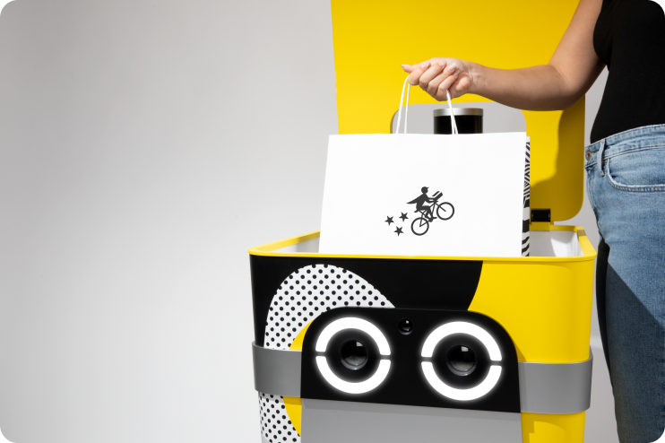
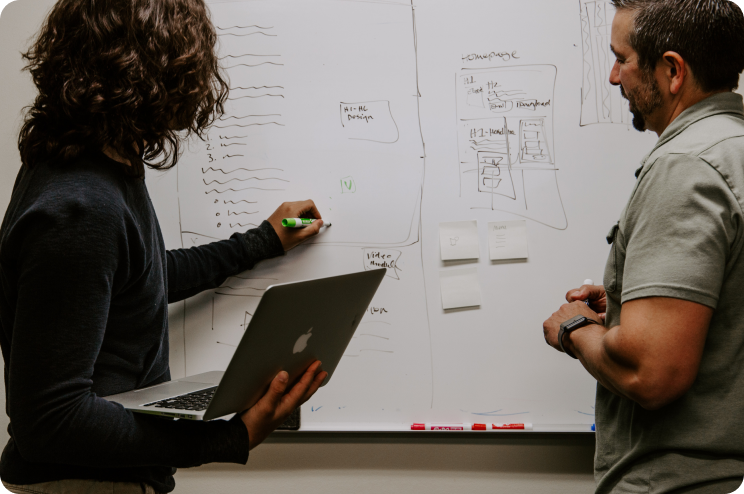

Pilot Experience Research
Pilots spend hours a day attending to many key aspects of a delivery, including order information, dropoff deadlines, customer support, and route optimization. It is essential that we design a UI that makes doing their job easy and sustainable. To do this, we have to take the following into consideration.
Driving Serve
Sometimes autonmous vehicles need help, so Pilots need to have the ability to take control of a Serve at a moment’s notice.

Deliveries
Pilots oversee orders as they travel from Merchant to Buyer, ensuring that everything arrives in tip-top shape.

Collecting Data
Our team is constantly working to improve Serve’s systems, so Pilots will often collect data and metrics to help in this effort.
Design and Research Challenges
Pilots attend to a number of systems at once, which results in a high cognitive load. This load can lead to stress, burnout, mistakes, and more. Designing a system that contain all the necessary information in a way that is quick to understand is essential. The Pilot UI has gone through many iterations, often in reaction to the addition or removeal of features. Consistent research is the only way to ensure that these changes don’t negatively impact pilot performance.